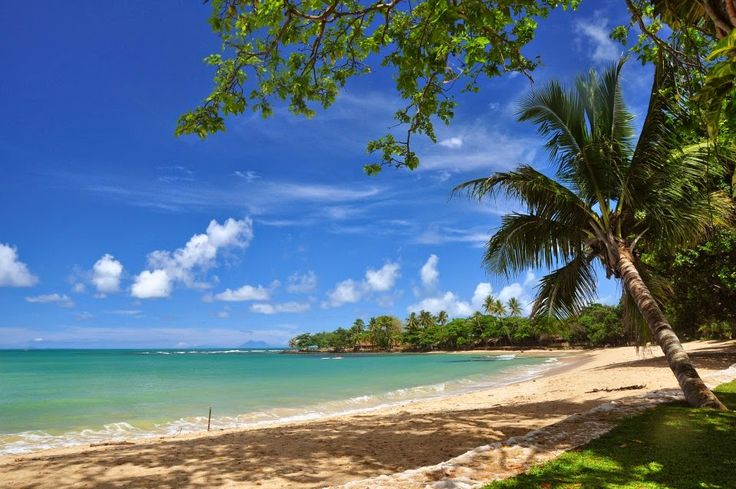
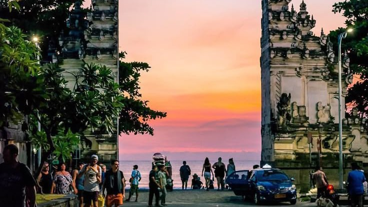
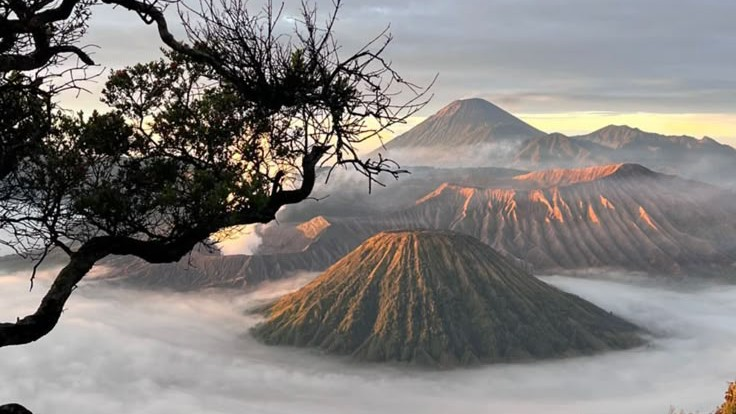
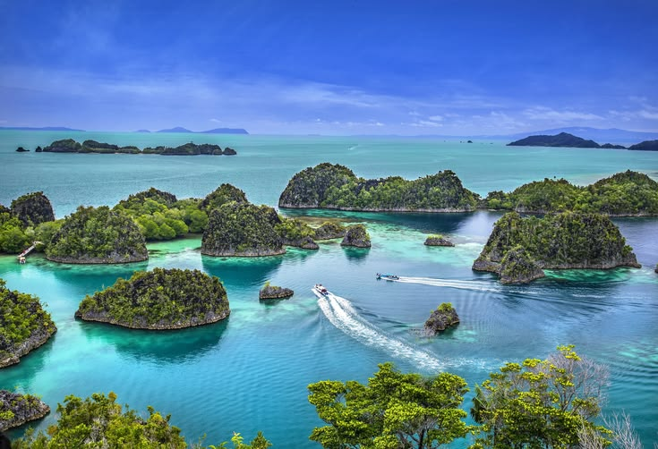
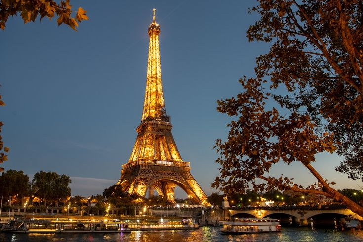
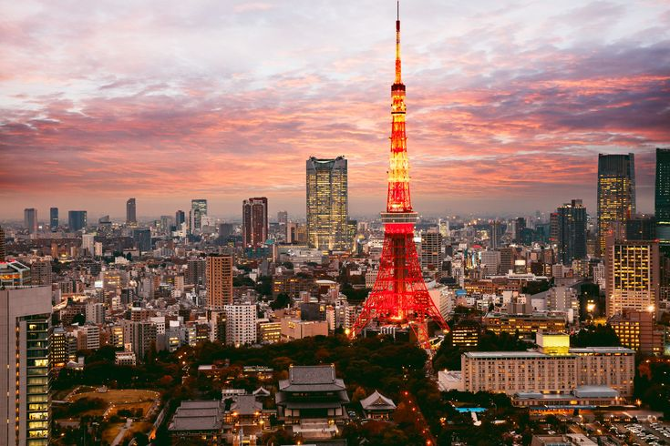
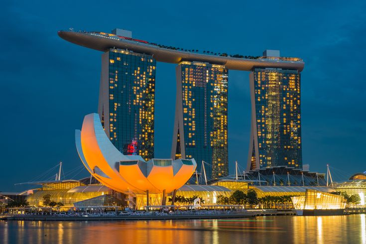

Di sini ada wisata dari Indonesia sampai luar negeri.
Tinggal pilih mau liburan ke mana.

Foto di atas: Pantai dengan air jernih,
salah satu contoh wisata yang ada di katalog kami.
Kami bikin katalog ini buat bantu kalian yang bingung
mau liburan ke mana. Ada yang suka pantai, gunung,
ada yang suka sejarah, semuanya ada di sini.
Harganya juga sudah kami tulis.
Kenapa Harus Pilih Katalog Kami?
Harganya Jujur - Sudah termasuk informasi harga tiket.
Gampang Dipesan - Tinggal chat WhatsApp.
Banyak Pilihan - Ada wisata nasional dan internasional.
Cocok Buat Pemula - Ada info visa dan tips hemat.
Liburan itu gak harus mahal, yang penting seru
bareng teman dan keluarga.
Liburan Kita Sejauh Ini
500+ Orang Udah Liburan Bareng Kami
6 Destinasi Wisata
4.9 / 5 Rating dari Pelanggan
100% Kepuasan Pelanggan
Cara Lihat Katalog Ini
1. Klik menu Nasional kalau mau liburan di Indonesia.
2. Klik menu Internasional kalau mau ke luar negeri.
3. Klik menu Kontak untuk bertanya dan memesan.
Yuk scroll ke bawah dan pilih liburan impian kalian!
Kata Mereka Yang Udah Liburan
"Bromo-nya bagus banget, sunrise-nya worth it banget!"
- Andi, Mojokerto
"Ke Singapura cuma bawa paspor doang, gampang banget!"
- Sinta, Surabaya
"Admin-nya fast respon, ditanya jam 11 malam masih dibales."
- Budi, Sidoarjo
WISATA NASIONAL

1. Pantai Kuta - Bali
Pantai yang paling terkenal di Bali.
Pas sore sunset-nya bagus banget,
banyak orang bermain surfing juga.
Lokasi: Badung, Bali
Harga Tiket: Gratis (akses pantai)
Jam Buka: 24 Jam

2. Gunung Bromo - Jawa Timur
Gunung yang terkenal sama sunrise-nya.
Ada kawah yang masih aktif dan lautan pasir
yang luas banget.
Lokasi: Probolinggo, Jawa Timur
Harga Tiket: Mulai Rp 30.000
Jam Buka: Sesuai ketentuan kawasan

3. Raja Ampat - Papua
Kalau dilihat dari atas, pulau-pulaunya kecil-kecil,
airnya berwarna biru dan tosca.
Tempat yang terkenal dengan keindahan bawah lautnya.
Lokasi: Papua Barat Daya
Harga Tiket: Sesuai destinasi
Jam Buka: Sesuai lokasi wisata
WISATA INTERNASIONAL

1. Menara Eiffel - Paris, Prancis
Menara yang paling terkenal di dunia.
Kalau malam lampunya menyala,
pemandangannya sangat indah.
Lokasi: Paris, Prancis
Mata Uang: Euro
Visa: Perlu Visa Schengen
Perkiraan Biaya: Rp 15.000.000 / 5 Hari

2. Tokyo - Jepang
Kota yang modern banget, ada Gunung Fuji juga.
Kalau musim semi ada bunga sakura.
Lokasi: Tokyo, Jepang
Mata Uang: Yen
Visa: Sesuai ketentuan perjalanan
Perkiraan Biaya: Rp 12.000.000 / 5 Hari

3. Marina Bay Sands - Singapura
Gedung terkenal dengan kolam renang
di bagian atasnya. Tempat yang wajib
dikunjungi saat ke Singapura.
Lokasi: Singapura
Mata Uang: Dollar Singapura
Visa: Bebas Visa 30 Hari untuk kunjungan singkat yang memenuhi ketentuan
Perkiraan Biaya: Rp 5.000.000 / 3 Hari
INFORMASI TENTANG WISATA
1. Dokumen yang Dibawa
Kalau wisata nasional cukup bawa identitas diri.
Kalau internasional harus membawa paspor.
Pastikan masa berlaku paspor masih mencukupi.
2. Mata Uang
Indonesia memakai Rupiah. Singapura memakai
Dollar SGD, Jepang memakai Yen, dan Eropa
memakai Euro. Tukarkan uang sebelum berangkat.
3. Tips Biar Hemat
Pesan tiket jauh-jauh hari agar lebih murah.
Bawa bekal atau makan di tempat yang murah.
Cek cuaca sebelum berangkat.
Jangan lupa membawa powerbank dan obat-obatan.
4. Cara Pesan
Pilih wisatanya, lalu hubungi admin melalui WhatsApp
untuk mendapatkan informasi pemesanan.